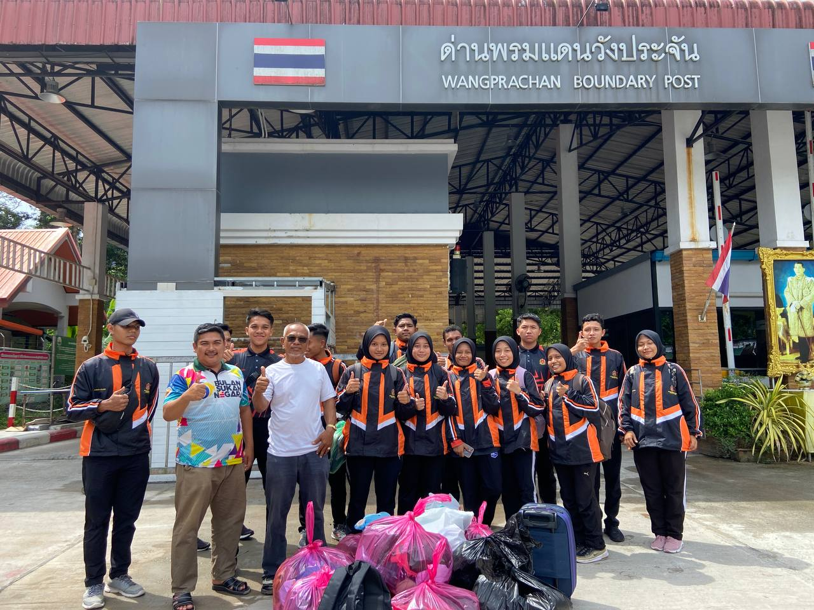
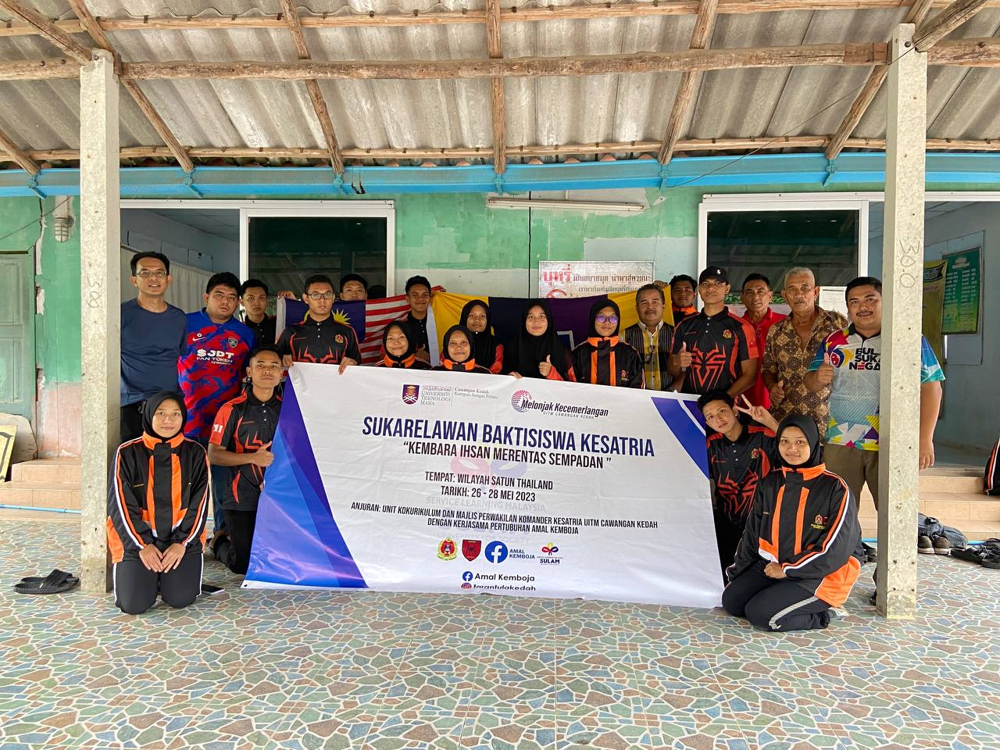
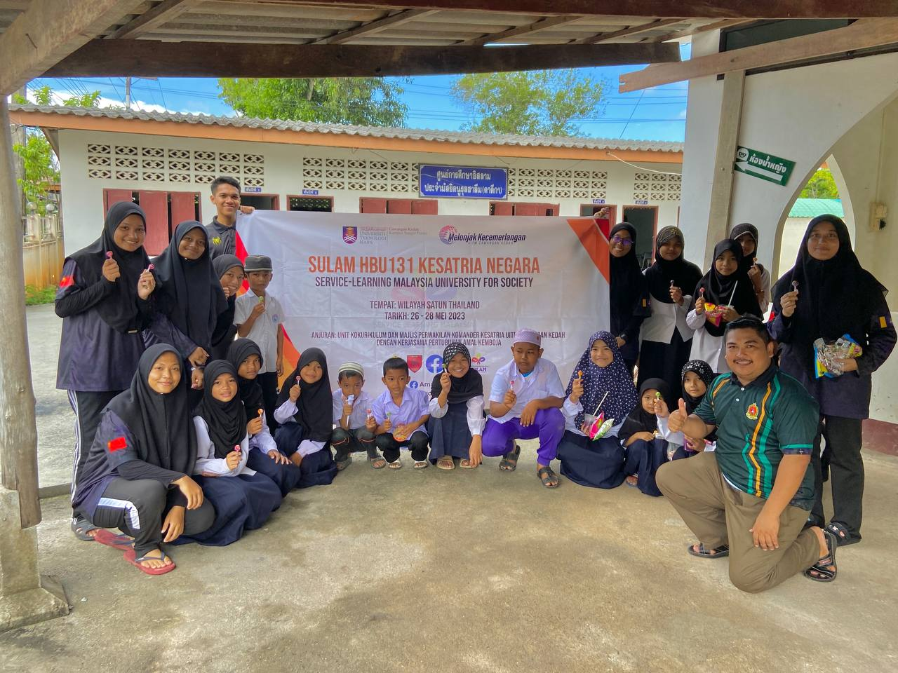

This is the first time I set foot in Thailand, and it is also the first time I participated in a program
that helps the Muslims there who are in need. I went with my commander friend and stayed there for three days and two nights.


On the first day, we arrived in Satun, Thaland. We went to clean and wash in the area and inside the mosque.
On that day, we were a little tired because, after arriving in Thailand,
we continued our activities of packing and helping people in need.
This is my first experience doing such activities. I can also see and learn about the culture there.
Apart from that, when I see Muslims there, I feel grateful for living in Malaysia, and I am also grateful for what I have.

On my second day in Thailand.
We went to a mosque to clean and wash the mosque.
Apart from the mosque, they also have four classes for their children to learn Islam.
Here, I can also learn their national language. I was also able to learn to get along with children
and communicate with them. We give them stationery and sweets. Apart from that, we also play together,
and whoever wins, we give a gift to the child. My memories of Satun, Thailand, are very precious together
with other commander friends, and this kind of experience is hard to get because the diploma period is a
less busy time and we will reach old age where there is less time to spend time with friends.
 Biodata
Experience
Education
Family
Gallery
Friends
Biodata
Experience
Education
Family
Gallery
Friends